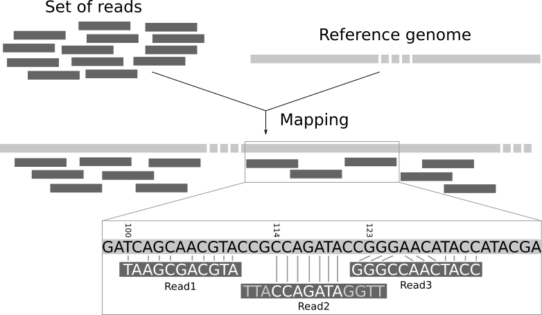
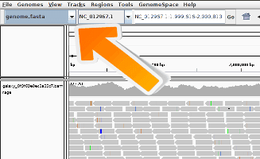

Mapping
| Autoren |
|
| Übersetzer |
|
| Lektoren |
|
| Gutachter |
|
ÜberblickFragen:
Lernziele:
Was ist Mapping?
Welche zwei Dinge sind entscheidend für ein korrektes Mapping?
Was ist eine BAM‑Datei?
Voraussetzungen:
Ein Tool ausführen, um Reads auf ein Referenzgenom zu mappen
Erklären, was eine BAM‑Datei ist und was sie enthält
Einen Genom‑Browser benutzen, um die Daten zu verstehen
Geschätzte Bearbeitungszeit: 1 StundeLevel: Einsteiger IntroductoryUnterstützende Materialien:Veröffentlicht: Mar 9, 2026Letzte Änderung: Mar 9, 2026Lizenz: Der Inhalt des Tutorials ist lizenziert unter der Creative Commons Attribution 4.0 International License. Das GTN Framework ist lizenziert unter MITversion Überarbeitung: 1
Die Sequenzierung erzeugt eine Sammlung von Sequenzen ohne genomischen Kontext. Wir wissen nicht, zu welchem Teil des Genoms die Sequenzen gehören. Das Mapping der Reads eines Experiments auf ein Referenzgenom ist ein wichtiger Schritt in der modernen Genomdatenanalyse. Durch das Mapping werden die Reads einer bestimmten Stelle im Genom zugeordnet und es können Erkenntnisse wie das Expressionsniveau von Genen gewonnen werden.
Die Reads sind nicht mit Positionsinformationen versehen, so dass wir nicht wissen, aus welchem Teil des Genoms sie stammen. Wir müssen die Sequenz des Reads selbst verwenden, um die entsprechende Region in der Referenzsequenz zu finden. Die Referenzsequenz kann jedoch recht lang sein (~3 Milliarden Basen beim Menschen), was die Suche nach einer passenden Region zu einer entmutigenden Aufgabe macht. Da unsere Reads kurz sind, kann es mehrere, gleich wahrscheinliche Stellen in der Referenzsequenz geben, von denen sie gelesen worden sein könnten. Dies gilt insbesondere für sich wiederholende Regionen.
Im Prinzip könnten wir eine BLAST-Analyse durchführen, um herauszufinden, wo die sequenzierten Teile am besten in das bekannte Genom passen. Das müssten wir für jede der Millionen von Reads in unseren Sequenzierdaten tun. Das Alignment von Millionen kurzer Sequenzen auf diese Weise kann jedoch einige Wochen dauern. Und wir interessieren uns nicht für die genaue Übereinstimmung der Basen (Alignment). Was uns interessiert, ist, “woher diese Reads stammen”. Dieser Ansatz wird Mapping genannt.
Im Folgenden werden wir einen Datensatz mit dem Mapper Bowtie2 bearbeiten und die Daten mit dem Programm IGV visualisieren.
AgendaIn diesem Tutorial werden wir uns mit folgenden Themen beschäftigen:
Vorbereiten der Daten
Praktische Übung: Daten-Upload
Erstellen Sie einen neuen Verlauf für dieses Tutorial und geben Sie ihm einen passenden Namen
Um einen neuen Verlauf zu erstellen, klicken Sie einfach auf das Symbol new-history am oberen Rand des Verlaufsfensters:
- Klicken Sie auf galaxy-pencil (Bearbeiten) neben dem Namen der Geschichte (der standardmäßig “Unbenannte Geschichte” lautet)
- Geben Sie den neuen Namen ein
- Klicken Sie auf Speichern
- Um die Umbenennung abzubrechen, klicken Sie auf die galaxy-undo schaltfläche “Abbrechen”
Wenn Sie nicht das galaxy-pencil (Edit) neben dem Verlaufsnamen haben (was der Fall sein kann, wenn Sie eine ältere Version von Galaxy verwenden), gehen Sie wie folgt vor:
- Klicken Sie auf Unbenannter Verlauf (oder den aktuellen Namen des Verlaufs) (Klicken Sie zum Umbenennen des Verlaufs) oben in Ihrem Verlaufsfenster
- Geben Sie den neuen Namen ein
- Drücken Sie Enter
Importieren Sie
wt_H3K4me3_read1.fastq.gzundwt_H3K4me3_read2.fastq.gzvon Zenodo oder aus der Datenbibliothek (fragen Sie Ihren Dozenten)https://zenodo.org/record/1324070/files/wt_H3K4me3_read1.fastq.gz https://zenodo.org/record/1324070/files/wt_H3K4me3_read2.fastq.gz
- Kopieren der Linkposition
Klicken Sie auf galaxy-upload Daten hochladen am oberen Rand der Werkzeugleiste
- Wählen Sie galaxy-wf-edit Daten einfügen/holen
Fügen Sie den/die Link(s) in das Textfeld ein
Drücken Sie Start
- Schließen Sie das Fenster
Als Alternative zum Hochladen der Daten von einer URL oder Ihrem Computer können die Dateien auch von einer Shared Data Library zur Verfügung gestellt werden:
- Gehen Sie in Bibliotheken (linker Bereich)
- Navigieren Sie zu dem richtigen Ordner, wie von Ihrem Ausbilder angegeben.
- Auf den meisten Galaxies werden die Tutoriumsdaten in einem Ordner mit dem Namen GTN - Material –> Topic Name -> Tutorial Name bereitgestellt.
- Wählen Sie die gewünschten Dateien aus
- Klicken Sie auf Zur Historie hinzufügen galaxy-dropdown am oberen Rand und wählen Sie as Datasets aus dem Dropdown-Menü
Wählen Sie im Pop-up-Fenster
- “Historie auswählen “: die Historie, in die Sie die Daten importieren möchten (oder erstellen Sie eine neue)
- Klicken Sie auf Importieren
Standardmäßig nimmt Galaxy den Link als Namen, also benennen Sie sie um.
Benennen Sie die Dateien in
reads_1undreads_2um
- Klicken Sie auf das galaxy-pencil Bleistift-Symbol für den Datensatz, um seine Attribute zu bearbeiten
- Ändern Sie im zentralen Bereich das Feld Name
- Klicken Sie auf die Schaltfläche Speichern
Erstelle eine gepaarte Sammlung namens
Paired Reads
Klicken Sie auf galaxy-selector Elemente auswählen am oberen Rand des Verlaufsfensters
- Überprüfen Sie alle Datensätze in Ihrem Verlauf, die Sie einschließen möchten
Klicken Sie auf n of N selected und wählen Sie Liste der Datensatzpaare erstellen
Sie befinden sich im Assistenten zum Erstellen von Sammlungen. Wählen Sie Liste gepaarter Datensätze und klicken Sie auf die Schaltfläche ‘Weiter’ unten rechts.
Überprüfen und konfigurieren Sie das automatische Paaren. Gewöhnlich haben Mate-Paare die Endungen
_1und_2oder_R1und_R2. Klicken Sie unten auf ‘Weiter’.
- Bearbeiten Sie den Listenbezeichner nach Bedarf.
- Geben Sie einen Namen für Ihre Sammlung ein
- Klicken Sie auf Erstellen, um Ihre Sammlung zu erstellen
- Klicken Sie erneut auf das Häkchen-Symbol oben in Ihrem Verlauf


Wir haben in Galaxy einfach FASTQ-Dateien importiert, die den Paired-End-Daten entsprechen, die wir direkt von einer Sequenziereinrichtung erhalten haben.
Bei der Sequenzierung können Fehler auftreten, wie z. B. der Aufruf falscher Nukleotide. Sequenzierungsfehler können die Analyse verfälschen und zu einer Fehlinterpretation der Daten führen. Der erste Schritt bei jeder Art von Sequenzierungsdaten ist immer die Überprüfung ihrer Qualität.
Es gibt ein spezielles Tutorial zur Qualitätskontrolle von Sequenzierungsdaten. Wir werden die Schritte dort nicht wiederholen. Sie sollten das tutorial befolgen und es auf Ihre Daten anwenden, bevor Sie weitermachen.
Mapping der Reads auf ein Referenzgenom
Beim Read-Mapping werden die Reads an ein Referenzgenom angeglichen. Ein Mapper nimmt als Eingabe ein Referenzgenom und einen Satz von Reads. Sein Ziel ist es, jeden Read in der Menge der Reads am Referenzgenom auszurichten, wobei Mismatches, Indels und das Abschneiden einiger kurzer Fragmente an den beiden Enden der Reads berücksichtigt werden:

Open image in new tabWir benötigen ein Referenzgenom, auf das wir die Reads mappen können.
Frage
- Was ist ein Referenzgenom?
- Für jeden Modellorganismus können mehrere mögliche Referenzgenome zur Verfügung stehen (z.B.
hg19undhg38für den Menschen). Welchem Genom entsprechen sie?- Welches Referenzgenom sollten wir verwenden?
- Ein Referenzgenom (oder Referenzassembly) ist ein Satz von Nukleinsäuresequenzen, der als repräsentatives Beispiel für das genetische Material einer Art zusammengestellt wurde. Da sie oft aus der Sequenzierung verschiedener Individuen zusammengestellt werden, repräsentieren sie nicht genau den Gensatz eines einzelnen Organismus, sondern ein Mosaik verschiedener Nukleinsäuresequenzen von jedem Individuum.
- Da die Kosten für die DNA-Sequenzierung sinken und neue Technologien zur Sequenzierung des gesamten Genoms aufkommen, werden immer mehr Genomsequenzen erzeugt. Anhand dieser neuen Sequenzen werden neue Alignments erstellt und die Referenzgenome verbessert (weniger Lücken, korrigierte Fehldarstellungen in der Sequenz usw.). Die verschiedenen Referenzgenome entsprechen den verschiedenen freigegebenen Versionen (den so genannten “Builds”).
- Diese Daten stammen aus der ChIP-seq von Mäusen, daher werden wir mm10 (Mus musculus) verwenden.
Derzeit gibt es über 60 verschiedene Mapper, und ihre Zahl wächst. In diesem Tutorial werden wir Bowtie2 verwenden, ein schnelles und speichereffizientes Open-Source-Tool, das sich besonders gut für das Alignment von Sequenzierungs-Reads von etwa 50 bis zu 1.000 Basen zu relativ langen Genomen eignet.
Praktische Übung: Mapping mit Bowtie2
- Bowtie2 ( Galaxy version 2.4.2+galaxy0) mit den folgenden Parametern
- “Ist dies eine einzelne oder gepaarte Bibliothek “:
Paired-end
- param-file “FASTA/Q-Datei #1”:
reads_1- param-file “FASTA/Q-Datei #2”:
reads_2“Möchten Sie Paired-End-Optionen festlegen? “:
NoSie sollten sich die Parameter dort ansehen, insbesondere die Paarungsorientierung, wenn Sie sie kennen. Sie können die Qualität des Paired-End-Mappings verbessern.
- “Werden Sie ein Referenzgenom aus Ihrer Historie auswählen oder einen eingebauten Index verwenden? “:
Use a built-in genome index
- “Referenzgenom auswählen “:
Mouse (Mus musculus): mm10“Analysemodus auswählen “:
Default setting onlySie sollten einen Blick auf die nicht-standard Parameter werfen und versuchen, sie zu verstehen. Sie können einen Einfluss auf das Mapping haben und es verbessern.
- “Speichern Sie die Bowtie2-Mapping-Statistiken in der Historie “:
Yes- Untersuchen Sie die Datei
mapping stats, indem Sie auf das Symbol galaxy-eye (Auge) Symbol
Frage
- Welche Informationen werden hier bereitgestellt?
- Wie viele Reads wurden genau 1 Mal gemappt?
- Wie viele Reads wurden mehr als 1 Mal gemappt? Wie ist das möglich? Was sollten wir mit ihnen machen?
- Wie viele Paare von Reads wurden nicht gemappt? Was sind die Ursachen dafür?
- Die hier gegebene Information ist eine quantitative. Wir können sehen, wie viele Sequenzen aufeinander abgestimmt sind. Sie sagt nichts über die Qualität aus.
- ~90% der Reads wurden genau 1 Mal aligniert
- ~7 % der Reads wurden >1 Mal übereinstimmend ausgerichtet. Diese werden als “multi-mapped reads” bezeichnet. Dies kann aufgrund von Wiederholungen im Referenzgenom geschehen (z. B. mehrere Kopien eines Gens), insbesondere wenn die Reads klein sind. Es ist schwierig zu entscheiden, woher diese Sequenzen stammen, und deshalb werden sie von den meisten Pipelines ignoriert. Überprüfen Sie immer die Statistiken, um sicherzustellen, dass nicht zu viele Informationen in nachfolgenden Analysen verworfen werden.
- ~3% der Reads wurden nicht gemappt, weil
- beide Reads des Paares sind aligned, aber ihre Positionen stimmen nicht mit dem Paar von Reads überein (
aligned discordantly 1 time)- Reads dieser Paare sind mehrfach gemappt (
aligned >1 timesinpairs aligned 0 times concordantly or discordantly)- ein Read dieser Paare wird gemappt, aber nicht der gepaarte Read (
aligned exactly 1 timeinpairs aligned 0 times concordantly or discordantly)- der Rest ist überhaupt nicht gemappt
Die Überprüfung der Mapping-Statistiken ist ein wichtiger Schritt, der vor der Fortsetzung der Analysen durchgeführt werden muss. Es gibt mehrere potenzielle Fehlerquellen beim Mapping, einschließlich (aber nicht beschränkt auf):
- Polymerase-Kettenreaktion (PCR)-Artefakte: Viele Hochdurchsatz-Sequenzierungsmethoden (HTS) beinhalten einen oder mehrere PCR-Schritte. PCR-Fehler zeigen sich als Mismatches im Alignment, und insbesondere Fehler in frühen PCR-Zyklen zeigen sich in mehreren Reads, was fälschlicherweise auf eine genetische Variation in der Probe schließen lässt. Ein ähnlicher Fehler sind PCR-Duplikate, bei denen dasselbe Lesepaar mehrfach vorkommt und die Berechnung der Abdeckung im Alignment verfälscht.
- Sequenzierungsfehler: Das Sequenziergerät kann entweder aus physikalischen Gründen (z. B. Öl auf einem Illumina-Objektträger) oder aufgrund von Eigenschaften der sequenzierten DNA (z. B. Homopolymere) einen fehlerhafte Aussage machen. Da Sequenzierfehler oft zufällig sind, können sie beim Variantenaufruf als Singleton Reads herausgefiltert werden.
- Mapping-Fehler: Der Mapping-Algorithmus kann einen Read an der falschen Stelle in der Referenz zuordnen. Dies geschieht häufig im Bereich von Wiederholungen oder anderen Regionen mit geringer Komplexität.
Wenn also die Mapping-Statistiken nicht gut sind, sollten Sie die Ursache für diese Fehler untersuchen, bevor Sie mit Ihren Analysen fortfahren.
Danach sollten Sie einen Blick auf die Reads werfen und die BAM-Datei inspizieren, in der die Read-Mappings gespeichert sind.
Inspektion einer BAM-Datei
Eine BAM-Datei (Binary Alignment Map) ist eine komprimierte Binärdatei, in der die Lesesequenzen gespeichert sind und in der angegeben ist, ob sie an eine Referenzsequenz (z. B. ein Chromosom) angeglichen wurden, und wenn ja, an welcher Position auf der Referenzsequenz sie angeglichen wurden.
Praktische Übung: Inspektion einer BAM/SAM-Datei
- Untersuchen Sie die param-file Ausgabe von Bowtie2 tool
Eine BAM-Datei (oder eine SAM-Datei, die nicht komprimierte Version) besteht aus:
- Ein Header-Abschnitt (die Zeilen, die mit
@beginnen), der Metadaten enthält, insbesondere die Chromosomennamen und -längen (Zeilen, die mit dem Symbol@SQbeginnen) -
Ein Alignment-Abschnitt, bestehend aus einer Tabelle mit 11 Pflichtfeldern sowie einer variablen Anzahl von optionalen Feldern:
Col Field Type Brief Description 1 QNAME String Query template NAME 2 FLAG Integer Bitwise FLAG 3 RNAME String References sequence NAME 4 POS Integer 1- based leftmost mapping POSition 5 MAPQ Integer MAPping Quality 6 CIGAR String CIGAR String 7 RNEXT String Ref. name of the mate/next read 8 PNEXT Integer Position of the mate/next read 9 TLEN Integer Observed Template LENgth 10 SEQ String Segment SEQuence 11 QUAL String ASCII of Phred-scaled base QUALity+33
Frage
- Welche Informationen finden Sie in einer SAM/BAM-Datei?
- Was sind die zusätzlichen Informationen im Vergleich zu einer FASTQ-Datei?
- Sequenzen und Qualitätsinformationen, wie ein FASTQ
- Mapping-Informationen, Position des Read auf dem Chromosom, Mapping-Qualität, etc
Die BAM-Datei enthält viele Informationen über jeden Read, insbesondere über die Qualität des Mappings.
Praktische Übung: Zusammenfassung der Mapping-Qualität
- Samtools Stats ( Galaxy version 2.0.2+galaxy2) mit den folgenden Parametern
- param-file “BAM-Datei “:
aligned reads(Ausgabe von Bowtie2 tool)- “Referenzsequenz verwenden “:
Locally cached/Use a built-in genome
- “Genom verwenden “:
Mouse (Mus musculus): mm10 Full- Untersuchen Sie die param-file
Stats-Datei
Frage
- Wie hoch ist der Anteil der Mismatches in den gemappten Reads, wenn sie an das Referenzgenom angeglichen werden?
- Was bedeutet die Fehlerrate?
- Was ist die durchschnittliche Qualität? Wie wird sie dargestellt?
- Was ist die durchschnittliche Insertgröße?
- Wie viele Reads haben einen Mapping-Qualitätsscore unter 20?
- Es gibt ~21.900 Mismatches für ~4.753.900 gemappted Basen, was im Durchschnitt ~0,005 Mismatches pro gemappter Base ergibt.
- Die Fehlerrate ist der Anteil der Fehlanpassungen pro gemappter Base, also das unmittelbar zuvor berechnete Verhältnis.
- Die durchschnittliche Qualität ist der mittlere Qualitätswert der Kartierung. Es handelt sich um einen Phred-Score, wie er auch in der FASTQ-Datei für jedes Nukleotid verwendet wird. Hier ist der Score jedoch nicht pro Nukleotid, sondern pro Read und stellt die Wahrscheinlichkeit der Mapping-Qualität dar.
- Die Insertgröße ist der Abstand zwischen den beiden Reads in den Paaren.
- Um die Informationen zu erhalten:
- Filter BAM ( Galaxy version 2.5.2+galaxy2) mit einem Filter, um nur die Reads mit einer Mappingqualität >= 20 zu behalten
- Samtools Stats ( Galaxy version 2.0.5) auf die Ausgabe von Filter
Vor der Filterung: 95.412 Reads und nach der Filterung: 89.664 Reads.
Visualisierung mit einem Genom-Browser
IGV
Der Integrative Genomics Viewer (IGV) ist ein hochleistungsfähiges Visualisierungstool für die interaktive Erkundung großer, integrierter Genomdatensätze. Es unterstützt eine Vielzahl von Datentypen, einschließlich array-basierter und Next-Generation-Sequenzdaten sowie genomische Annotationen. Im Folgenden werden wir es verwenden, um die gemappten Reads zu visualisieren.
Praktische Übung: Visualisierung der Reads in IGVEs gibt zwei Möglichkeiten, es auszuführen:
- Wenn Sie IGV installiert haben (oder es installieren wollen):
- Installieren Sie IGV
- Starten Sie IGV auf Ihrem Computer
- Erweitern Sie die param-file Ausgabe von Bowtie2 tool
- Klicken Sie auf das
localindisplay with IGV, um die Reads in den IGV-Browser zu laden- Wenn Sie nicht über IGV verfügen
- Klicken Sie auf
Mouse mm10(oder den richtigen Organismus) indisplay with IGV, um die Reads in den IGV-Browser zu laden- Zoom auf die
chr2:98,666,236-98,667,473
Die Reads haben eine Richtung: Sie werden auf den Vorwärts- bzw. Rückwärtsstrang abgebildet. Wenn Sie den Mauszeiger über einen Read bewegen, werden zusätzliche Informationen angezeigt
Frage
- Was könnte es bedeuten, wenn ein Balken in der Abdeckungsansicht farbig ist?
- Was könnte der Grund dafür sein, dass eine Anzeige weiß statt grau ist?
- Wenn ein Nukleotid in mehr als 20% der qualitätsgewichteten Reads von der Referenzsequenz abweicht, färbt IGV den Balken im Verhältnis zur Anzahl der Reads jeder Base.
- Sie haben eine Abbildungsqualität gleich Null. Die Interpretation dieser Mapping-Qualität hängt vom Mapping-Aligner ab, da einige häufig verwendete Aligner diese Konvention verwenden, um einen Read mit mehreren Alignments zu markieren. In einem solchen Fall wird der Read auch auf eine andere Stelle mit gleich guter Platzierung abgebildet. Es ist auch möglich, dass der Read nicht eindeutig platziert werden kann, aber die anderen Platzierungen nicht unbedingt gleichwertige Treffer ergeben.
Kommentar: Tipps für IGV
- Da die Anzahl der Reads in einer Region recht groß sein kann, zeigt der IGV-Browser standardmäßig nur die Reads an, die in ein kleines Fenster fallen. Dieses Verhalten kann im IGV von
view > Preferences > Alignmentsgeändert werden.Wenn das Genom, das Sie interessiert, dort nicht zu finden ist, überprüfen Sie, ob es über More… verfügbar ist. Wenn dies nicht der Fall ist, können Sie es manuell über das Menü Genome -> Genom laden von… hinzufügen

Eine allgemeine Beschreibung der Benutzeroberfläche des IGV-Browsers finden Sie hier: IGV Browser Beschreibung
JBrowse
JBrowse ( Galaxy version 1.16.11+galaxy0) ist ein alternativer, webbasierter Genombrowser. Während IGV eine Software ist, die Sie herunterladen und ausführen müssen, sind JBrowse-Instanzen online gehostete Websites, die eine Schnittstelle zum Durchsuchen von Genomdaten bieten. Wir werden es verwenden, um die gemappten Reads zu visualisieren.
Praktische Übung: Visualisierung der Reads in JBrowse
- JBrowse ( Galaxy version 1.16.11+galaxy1) browser, mit den folgenden Parametern:
- “Referenzgenom zur Anzeige “: Verwenden Sie ein eingebautes Genom
- “Wählen Sie ein Referenzgenom “:
mm10- “JBrowse-in-Galaxy Action “:
New JBrowse Instance- “Insert Track Group “:
- “Insert Annotation Track “:
- “Track Type “: BAM Pileups
- “BAM Track Data “:
aligned reads(Ausgabe von Bowtie2 tool)- “Autogenerate SNP Track “: Ja
- “Track Visibility “: Ein für neue Benutzer
- Visualisieren Sie den Datensatz galaxy-eye
- Zoom auf die
chr2:98,666,236-98,667,473
Kommentar: LangsamDie Ausführung kann je nach den Ressourcen Ihrer Trainingsinstanz ein bis zwei Minuten dauern. Der Server baut eine kleine Website für Sie auf und bereitet das Referenzgenom in einem effizienteren Format vor. Wenn Sie dies mit Ihren Kollegen teilen möchten, können Sie diesen Datensatz herunterladen und direkt auf Ihren Webserver stellen.
Die Reads haben eine Richtung: Sie werden auf den Vorwärts- bzw. Rückwärtsstrang abgebildet. Wenn Sie auf einen Read klicken, werden zusätzliche Informationen angezeigt
Frage
- Was bedeuten die Tropfenform und die Linie in der automatisch generierten SNP-Spur?
- Was bedeuten unterschiedlich gefärbte Reads?
- Wenn genügend Reads einen anderen Wert haben, wird dieser mit einem Tränensymbol markiert. Der Coverage Plot wird in der Höhe mit dem Prozentsatz der Reads mit einem anderen Call an dieser Position markiert
Farbcodes:
Colour Meaning Original red Forward strand Original blue Reverse strand Hard red Forward strand, missing mate Hard Blue Reverse strand, missing mate Light red Forward strand not proper Light blue Reverse strand, not proper Black Forward, diff chr Grey Reverse, diff chr Grey No strand
Schlussfolgerung
Nach der Qualitätskontrolle ist das Mapping ein wichtiger Schritt bei den meisten Analysen von Sequenzierungsdaten (RNA-Seq, ChIP-Seq usw.), um festzustellen, wo im Genom unsere Reads herkommen, und diese Information für nachgeschaltete Analysen zu nutzen.
Du hast das Tutorial abgeschlossen
Zusammenfassung
Kenne deine Daten!
Mapping ist nicht trivial
Es gibt viele Mapping‑Algorithmen, abhängig von deinen Daten musst du den passenden wählen
Häufig gestellte Fragen
Fragen zu diesem Tutorial? Schau auf die verfügbaren FAQ-Seiten und Support-KanäleUseful literature
Further information, including links to documentation and original publications, regarding the tools, analysis techniques and the interpretation of results described in this tutorial can be found here.
Feedback
Feedback Möglichkeit für Lehrende: Wie lief dein Kurs.
Für Kursteilnehmer/-innen oder Studierende: Über Rückmeldung durch das untenstehende Formular würden wir uns freuen.

Dieses Tutorial zitieren
- Joachim Wolff, Bérénice Batut, Helena Rasche, Mapping (Galaxy Training Materials). https://training.galaxyproject.org/training-material/topics/sequence-analysis/tutorials/mapping/tutorial_DE.html Online; accessed TODAY
- Hiltemann, Saskia, Rasche, Helena et al., 2023 Galaxy Training: A Powerful Framework for Teaching! PLOS Computational Biology 10.1371/journal.pcbi.1010752
- Batut et al., 2018 Community-Driven Data Analysis Training for Biology Cell Systems 10.1016/j.cels.2018.05.012
@misc{sequence-analysis-mapping, author = "Joachim Wolff and Bérénice Batut and Helena Rasche", title = "Mapping (Galaxy Training Materials)", year = "", month = "", day = "", url = "\url{https://training.galaxyproject.org/training-material/topics/sequence-analysis/tutorials/mapping/tutorial_DE.html}", note = "[Online; accessed TODAY]" } @article{Hiltemann_2023, doi = {10.1371/journal.pcbi.1010752}, url = {https://doi.org/10.1371%2Fjournal.pcbi.1010752}, year = 2023, month = {jan}, publisher = {Public Library of Science ({PLoS})}, volume = {19}, number = {1}, pages = {e1010752}, author = {Saskia Hiltemann and Helena Rasche and Simon Gladman and Hans-Rudolf Hotz and Delphine Larivi{\`{e}}re and Daniel Blankenberg and Pratik D. Jagtap and Thomas Wollmann and Anthony Bretaudeau and Nadia Gou{\'{e}} and Timothy J. Griffin and Coline Royaux and Yvan Le Bras and Subina Mehta and Anna Syme and Frederik Coppens and Bert Droesbeke and Nicola Soranzo and Wendi Bacon and Fotis Psomopoulos and Crist{\'{o}}bal Gallardo-Alba and John Davis and Melanie Christine Föll and Matthias Fahrner and Maria A. Doyle and Beatriz Serrano-Solano and Anne Claire Fouilloux and Peter van Heusden and Wolfgang Maier and Dave Clements and Florian Heyl and Björn Grüning and B{\'{e}}r{\'{e}}nice Batut and}, editor = {Francis Ouellette}, title = {Galaxy Training: A powerful framework for teaching!}, journal = {PLoS Comput Biol} }
Förderung
Diese Personen oder Organisationen unterstützten die Entwicklung dieser Quelle finanziell.

Möchtest Du dein Wissen erweitern?Mach eines unserer empfohlenen Folgetrainings:
You can use Ephemeris's
shed-tools installcommand to install the tools used in this tutorial.shed-tools install [-g GALAXY] [-a API_KEY] -t <(curl https://training.galaxyproject.org/training-material/api/topics/sequence-analysis/tutorials/mapping/tutorial.json | jq .admin_install_yaml -r)Alternatively you can copy and paste the following YAML
--- install_tool_dependencies: true install_repository_dependencies: true install_resolver_dependencies: true tools: - name: trim_galore owner: bgruening revisions: 949f01671246 tool_panel_section_label: FASTA/FASTQ tool_shed_url: https://toolshed.g2.bx.psu.edu/ - name: bamtools_filter owner: devteam revisions: cb20f99fd45b tool_panel_section_label: SAM/BAM tool_shed_url: https://toolshed.g2.bx.psu.edu/ - name: bamtools_filter owner: devteam revisions: 993b19f20c76 tool_panel_section_label: SAM/BAM tool_shed_url: https://toolshed.g2.bx.psu.edu/ - name: bowtie2 owner: devteam revisions: f76cbb84d67f tool_panel_section_label: Mapping tool_shed_url: https://toolshed.g2.bx.psu.edu/ - name: fastqc owner: devteam revisions: e7b2202befea tool_panel_section_label: FASTA/FASTQ tool_shed_url: https://toolshed.g2.bx.psu.edu/ - name: samtools_stats owner: devteam revisions: 24c5d43cb545 tool_panel_section_label: SAM/BAM tool_shed_url: https://toolshed.g2.bx.psu.edu/ - name: samtools_stats owner: devteam revisions: 541082d03bef tool_panel_section_label: SAM/BAM tool_shed_url: https://toolshed.g2.bx.psu.edu/ - name: samtools_stats owner: devteam revisions: 57934e90e27c tool_panel_section_label: SAM/BAM tool_shed_url: https://toolshed.g2.bx.psu.edu/ - name: jbrowse owner: iuc revisions: 4542035c1075 tool_panel_section_label: Graph/Display Data tool_shed_url: https://toolshed.g2.bx.psu.edu/ - name: jbrowse owner: iuc revisions: a6e57ff585c0 tool_panel_section_label: Graph/Display Data tool_shed_url: https://toolshed.g2.bx.psu.edu/ - name: multiqc owner: iuc revisions: c1a4b5f3b432 tool_panel_section_label: Quality Control tool_shed_url: https://toolshed.g2.bx.psu.edu/